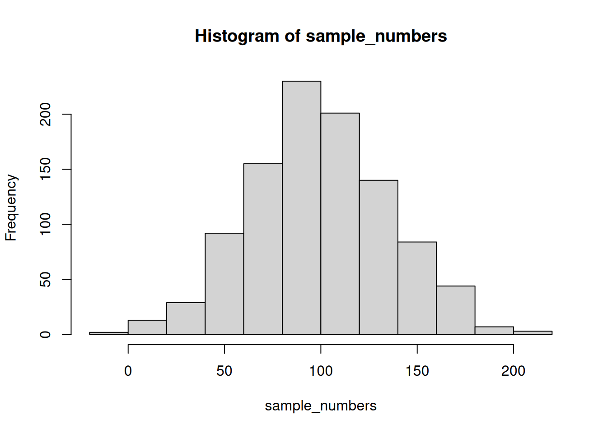

my_numbers <- c(1,5,3,2)R Basics
R Basics
This section covers the basics you need to perform descriptive statistics analysis using R(2024). Similar to other programming languages, R has a base package and an Integrated Development Environment (IDE). The base package allows you to run R code on your computer, while R Studio is an IDE specifically designed for developing R programs and packages.
Installing
The R base package can be downloaded from the official R website. Once on the website, select the precompiled binary for your operating system, download the file, and install it. To verify that R has been successfully installed, open your command prompt (cmd) or terminal and type R to start the R console. To exit the R console, type q().
$ R
R version 4.4.0 (2024-04-24) -- "Puppy Cup"
Copyright (C) 2024 The R Foundation for Statistical Computing
Platform: x86_64-pc-linux-gnu
R is free software and comes with ABSOLUTELY NO WARRANTY.
You are welcome to redistribute it under certain conditions.
Type 'license()' or 'licence()' for distribution details.
Natural language support but running in an English locale
R is a collaborative project with many contributors.
Type 'contributors()' for more information and
'citation()' on how to cite R or R packages in publications.
Type 'demo()' for some demos, 'help()' for on-line help, or
'help.start()' for an HTML browser interface to help.
Type 'q()' to quit R.
> q()Introduction to RStudio
RStudio is an essential tool for anyone working with the R programming language. It serves as an integrated development environment (IDE) that makes working with R more efficient and user-friendly. Here’s what you need to know:
What is RStudio?
RStudio is a flexible, multifunctional open-source IDE that serves as a graphical front-end for working with R (version 3.0.1 or higher). Additionally, it supports other programming languages like Python and SQL. Key features of RStudio include a user-friendly interface, the ability to write and save reusable scripts, and easy access to imported data and created objects such as variables and functions. It provides exhaustive help on any object, offers code autocompletion, and facilitates project organization and collaboration. Users can preview plots, switch between the terminal and console, and track their operational history, making it an indispensable tool for data analysis and programming.
How to Install RStudio:
To install RStudio, begin by visiting the official RStudio website. Scroll down to locate the download buttons for RStudio Desktop. Select the precompiled binary appropriate for your operating system, download the file, and install it.
Additional Resources:
- DataCamp’s RStudio Tutorial: A comprehensive guide for beginners.
- Dataquest’s Getting Started with R and RStudio: Learn key features and start programming in R.
- GitHub Pages: Introduction to RStudio: Fundamentals of RStudio for scientific projects.
- Introduction to R and RStudio (GitBook): Best practices for organizing code using RStudio.
- RStudio for the Total Beginner: An accessible introduction to RStudio for the total beginner.
Books
Descriptive Statistics
Descriptive statistics is a branch of statistics that focuses on summarizing and describing the features of a dataset. It provides simple summaries about the sample and the measures, offering a way to present data in a meaningful and understandable form. The origins of descriptive statistics date back to the early days of statistical science, where it served as the foundational method for analyzing data.
History:
The roots of descriptive statistics can be traced back to ancient civilizations, such as the Babylonians and Egyptians, who used basic statistical methods to manage agricultural data, censuses, and astronomical information. However, the formal development of descriptive statistics began in the 17th and 18th centuries. John Graunt, an English demographer, is often credited with laying the groundwork for statistical analysis through his work on mortality rates in the 1660s. His pioneering efforts in collecting and analyzing data led to the birth of modern statistics.
In the 18th century, the field was further advanced by the work of mathematicians like Pierre-Simon Laplace and Carl Friedrich Gauss, who developed key statistical concepts and methods. The 19th and 20th centuries saw the emergence of more sophisticated statistical techniques and the formalization of the discipline. Descriptive statistics evolved to include a variety of measures and graphical representations that remain fundamental to data analysis today.
- Measures of Central Tendency:
- Mean: The arithmetic average of a set of numbers. For example, in a dataset of test scores (80, 85, 90, 75, 95), the mean score is calculated as (80 + 85 + 90 + 75 + 95) / 5 = 85.
- Median: The middle value in a dataset when the numbers are arranged in ascending order. In the test scores example, the median score is 85.
- Mode: The most frequently occurring value in a dataset. If a dataset of test scores is (80, 85, 85, 90, 95), the mode is 85.
- Measures of Dispersion:
- Range: The difference between the highest and lowest values in a dataset. For test scores (75, 80, 85, 90, 95), the range is 95 - 75 = 20.
- Variance: A measure of the spread of a dataset. It is the average of the squared differences from the mean. For the test scores, the variance can be calculated by finding the mean, subtracting each score from the mean, squaring the result, and then averaging those squared differences.
- Standard Deviation: The square root of the variance, representing the average amount each value in the dataset differs from the mean. It provides insight into the dataset’s overall variability.
- Graphical Representations:
- Histograms: Bar graphs that represent the frequency distribution of a dataset. They help in visualizing the shape and spread of data.
- Box Plots: Graphical representations that show the distribution of a dataset based on a five-number summary: minimum, first quartile, median, third quartile, and maximum. Box plots highlight the central tendency and variability, as well as potential outliers.
- Pie Charts: Circular charts divided into sectors representing proportions of the whole. They are useful for displaying categorical data and comparing parts of a whole.
Descriptive statistics is essential in various fields, including economics, psychology, and social sciences, where it aids in making data-driven decisions. By providing a clear summary of data through measures of central tendency, dispersion, and graphical representations, descriptive statistics helps researchers and analysts interpret and communicate their findings effectively.
R first steps
To perform descriptive statistics, we need to assign some list of numbers to a variable. This can be done using the `c()` function, which stands for combine.
There a few other handy ways to make numbers. We can use seq() to make a sequence. Here’s making the numbers from 1 to 100
one_to_one_hundred <- seq(1,100,1)We can repeat things, using rep. Here’s making 5 10s, and 25 1s:
rep(10,5)[1] 10 10 10 10 10rep(1,25) [1] 1 1 1 1 1 1 1 1 1 1 1 1 1 1 1 1 1 1 1 1 1 1 1 1 1all_together_now <- c(rep(10,5),rep(1,25)) Sum
Let’s work with the numbers 1 to 256. First, we’ll use the `sum()` function to add them up.
one_to_one_hundred <- seq(1,100,1)
sum(one_to_one_hundred)[1] 5050Length
We put 100 numbers into the variable one_to_one_hundred. We know how many numbers there are in there. How can we get R to tell us? We use length() for that.
length(one_to_one_hundred)[1] 100Central Tendency
Mean
Remember the mean of some numbers is their sum, divided by the number of numbers. We can compute the mean like this:
sum(one_to_one_hundred)/length(one_to_one_hundred)[1] 50.5Or, we could just use the mean() function like this:
mean(one_to_one_hundred)[1] 50.5Median
The median is the number that lies exactly in the middle of a sorted list of numbers. If the list has an even number of elements, the median is calculated as the average of the two middle numbers.
- If \(n\) is odd, \(med(X) = X_{(n+1)/2}\)
- If \(n\) is even, \(med(X) = \frac{X_{n/2} + X_{(n+2) + 1}}{2}\)
You can use the median() function to find it. For example, in a list of three numbers, the middle number is 2, so the median is 2.
median(c(1,2,3))[1] 2Mode
R does not have a built-in function for calculating the mode. You will need to write one yourself. Here is an example of how to create a mode function and use it. Remember, the mode is the number that appears most frequently in a dataset. In the example below, 1 occurs the most often, so the mode is 1.
mode <- function(x) {
ux <- unique(x)
ux[which.max(tabulate(match(x, ux)))]
}
mode(c(1,1,1,1,1,1,1,2,3,4))[1] 1Variation
We often want to understand how much the numbers vary. To describe this variability, we look at descriptive statistics such as range, variance, the standard deviation, and others.
First, let’s remind ourselves what variation looks like (it refers to differences among numbers). We’ll sample 1000 numbers from a normal distribution with a mean of 101 and a standard deviation of 35. Then, we’ll create a histogram to visualize the variation around the mean of 10.
sample_numbers <- rnorm(1000,101,35)
hist(sample_numbers)
Range
The range is the minimum and maximum values in the set, we use the range function.
range(sample_numbers)[1] -7.461576 207.119929Variance
We can find the sample variance using var().
var(sample_numbers)[1] 1296.951Standard Deviation
We find the sample standard deviation us sd().
sd(sample_numbers)[1] 36.01321Remember that the standard deviation is just the square root of the variance, see:
sqrt(var(sample_numbers))[1] 36.01321Review
sample_numbers <- rnorm(1000,101,35)
sum(sample_numbers)[1] 101370.6length(sample_numbers)[1] 1000mean(sample_numbers)[1] 101.3706median(sample_numbers)[1] 101.2754mode(sample_numbers)[1] 48.96654range(sample_numbers)[1] -42.53119 227.15131var(sample_numbers)[1] 1286.185sd(sample_numbers)[1] 35.86342Descriptive Statistics by conditions
In some instances, a single variable may contain a number of values, which can be analyzed using the aforementioned functions to obtain descriptive statistics. In contrast, in the majority of cases encountered in this course, a data frame comprising multiple numerical values representing distinct conditions will be utilized. In such instances, it is imperative to identify descriptive statistics for each set of values within each condition.
Fortunately, the R programming language is highly adept at performing this task in a single operation. To illustrate this concept, consider the following example. A data frame containing 10 numbers for each condition will be created. There are 10 conditions, each labeled A, B, C, D, E, F, G, H, I, and J.
scores <- rnorm(100,10,5)
conditions <- rep(c("A","B","C","D","E","F","G","H","I","J"), each =10)
my_df <- data.frame(conditions,scores)A review of the my_df data frame reveals that it contains 100 rows. Each row represents a distinct condition, with a label in the conditions column and 10 scores for that condition in the scores column. One might inquire as to the mean of the scores in each condition. In order to obtain the mean of the scores for each condition, one must find the mean of 10 scores.
The slow way to do it would be like this:
mean(my_df[my_df$conditions=="A",]$scores)[1] 8.749205mean(my_df[my_df$conditions=="B",]$scores)[1] 10.85871mean(my_df[my_df$conditions=="C",]$scores)[1] 7.650824# and then keep goingIt is evident that no individual or entity is willing to assume the responsibility of performing this task. It is therefore prudent to encapsulate this functionality, and R provides us with the necessary tools to automate this functionality.
group_by and summarise
We can easily do everything all at once using the group_by and summarise function from the dplyr package. Just watch
library(dplyr)
Attaching package: 'dplyr'The following objects are masked from 'package:stats':
filter, lagThe following objects are masked from 'package:base':
intersect, setdiff, setequal, unionmy_df %>%
group_by(conditions) %>%
summarise(means = mean(scores))# A tibble: 10 × 2
conditions means
<chr> <dbl>
1 A 8.75
2 B 10.9
3 C 7.65
4 D 10.0
5 E 12.2
6 F 9.27
7 G 11.3
8 H 10.2
9 I 8.76
10 J 12.4 A few points require further consideration. Firstly, the printout of this was of an inferior quality. A solution to this issue is to create a new variable containing the results of the code and then use the knitr::kable function to print the variable in a more aesthetically pleasing manner when the document is compiled.
summary_df <- my_df %>%
group_by(conditions) %>%
summarise(means = mean(scores))
knitr::kable(summary_df)| conditions | means |
|---|---|
| A | 8.749205 |
| B | 10.858707 |
| C | 7.650824 |
| D | 10.022154 |
| E | 12.234878 |
| F | 9.266721 |
| G | 11.306428 |
| H | 10.228266 |
| I | 8.759115 |
| J | 12.424293 |
Multiple descriptives
The most advantageous aspect of the dplyr method is that it permits the addition of multiple functions, resulting in the generation of multiple summary statistics in a unified format. To illustrate this, consider the calculation of the standard deviation:
summary_df <- my_df %>%
group_by(conditions) %>%
summarise(means = mean(scores),
sds = sd(scores))
knitr::kable(summary_df)| conditions | means | sds |
|---|---|---|
| A | 8.749205 | 3.809475 |
| B | 10.858707 | 4.655481 |
| C | 7.650824 | 4.776866 |
| D | 10.022154 | 5.564239 |
| E | 12.234878 | 3.934642 |
| F | 9.266721 | 4.074786 |
| G | 11.306428 | 6.359828 |
| H | 10.228266 | 5.714836 |
| I | 8.759115 | 7.025043 |
| J | 12.424293 | 6.270404 |
Furthermore, the minimum and maximum values will be included.
summary_df <- my_df %>%
group_by(conditions) %>%
summarise(means = mean(scores),
sds = sd(scores),
min = min(scores),
max = max(scores))
knitr::kable(summary_df)| conditions | means | sds | min | max |
|---|---|---|---|---|
| A | 8.749205 | 3.809475 | 2.6909396 | 14.36260 |
| B | 10.858707 | 4.655481 | 4.3610864 | 18.34482 |
| C | 7.650824 | 4.776866 | 1.2825037 | 19.33234 |
| D | 10.022154 | 5.564239 | 3.2911257 | 17.71844 |
| E | 12.234878 | 3.934642 | 6.2258202 | 18.29770 |
| F | 9.266721 | 4.074786 | 3.3725043 | 17.87850 |
| G | 11.306428 | 6.359828 | 2.4939802 | 23.04869 |
| H | 10.228266 | 5.714836 | 0.0305871 | 17.12949 |
| I | 8.759115 | 7.025043 | -4.1064345 | 18.98884 |
| J | 12.424293 | 6.270404 | 1.8025658 | 20.80197 |
Describing gapminder
Having established the methodology for obtaining descriptive statistics from R, we may now proceed to apply this methodology to a real data set. We will now proceed to inquire about the gapminder data.
library(gapminder)
gapminder_df <- gapminderNote: The code will only function properly if the gapminder package has been installed. It is imperative that the user is connected to the internet prior to commencing the installation process. To do so, navigate to the Packages tab, located in the bottom right panel, and select the option to install. Subsequently, a search for the gapminder package should be conducted, after which it should be selected and installed.
What are some descriptive for Life expectancy by continent?
Copy the code from the last part of descriptives using dplyr, then change the names like this:
summary_df <- gapminder_df %>%
group_by(continent) %>%
summarise(means = mean(lifeExp),
sds = sd(lifeExp),
min = min(lifeExp),
max = max(lifeExp))
knitr::kable(summary_df)| continent | means | sds | min | max |
|---|---|---|---|---|
| Africa | 48.86533 | 9.150210 | 23.599 | 76.442 |
| Americas | 64.65874 | 9.345088 | 37.579 | 80.653 |
| Asia | 60.06490 | 11.864532 | 28.801 | 82.603 |
| Europe | 71.90369 | 5.433178 | 43.585 | 81.757 |
| Oceania | 74.32621 | 3.795611 | 69.120 | 81.235 |
Generalization Exercise
Complete the generalization exercise described in your R Markdown document for this lab.
What is the mean, standard deviation, minimum and maximum life expectancy for all the gapminder data (across all the years and countries). Hint: do not use
group_byWhat is the mean, standard deviation, minimum and maximum life expectancy for all of the continents in 2007, the most recent year in the dataset. Hint: add another pipe using
filter(year==2007) %>%
Writing assignment
Complete the writing assignment described in your R Markdown document for this lab. When you have finished everything. Knit the document and hand in your stuff (you can submit your .RMD file to blackboard if it does not knit.)
Your writing assignment is to answer these questions in full sentences using simple plain langauge:
- Define the mode.
- Explain what would need to happen in order for a set of numbers to have two modes
- Define the median
- Define the mean
- Define the range
- When calculating the standard deviation, explain what the difference scores represent
- Explain why the difference scores are squared when calculating the standard deviation
- If one set of numbers had a standard deviation of 5, and another had a standard deviation of 10, which set of numbers would have greater variance, explain why.
Descriptive Statistics and Histograms in R
Now let’s use a real dataset to calculate the same measures of central tendency and variability as in the previous example, but with the addition of a histogram to visualize the distribution and relate back to the descriptive statistics. Here is a link to the life expectancy dataset we used for our graphing tutorial. It is named life_expectancy.csv.
Suppose we wanted to know about life expectancy around the world in 2018. This will include calculating descriptive statistics and graphing a histogram to examine the distribution of our data. R allows us to handle these tasks efficiently with a few lines of code.
Step-by-Step Process:
Load the Data:
- First, ensure you have the dataset
life_expectancy.csvin your working directory. - Load the data into R.
# Load necessary libraries library(ggplot2) library(dplyr) # Load the data life_expectancy <- read.csv("data/life_expectancy.csv")- First, ensure you have the dataset
Calculate Descriptive Statistics:
- Calculate the measures of central tendency (mean, median, mode) and measures of variability (range, standard deviation, variance) for life expectancy in 2018.
# Filter for the year 2018 life_2018 <- life_expectancy %>% filter(Year == 2018) %>% select(life_expectancy) # Calculate descriptive statistics # Summarize the resultsCreate a Histogram:
- Plot a histogram to visualize the distribution of life expectancy in 2018, and overlay a normal curve.
# Plot the histogram with a normal curve ggplot(life_2018, aes(x = life_expectancy)) + geom_histogram(aes(y = ..density..), binwidth = 2, fill = "skyblue", color = "black") + stat_function(fun = dnorm, args = list(mean = mean_life, sd = sd_life), color = "red", size = 1) + labs(title = "Histogram of Life Expectancy in 2018", x = "Life Expectancy", y = "Density") + theme_minimal()
This process will produce a histogram displaying the distribution of life expectancy in 2018 with a superimposed normal curve for comparison.
Interpretation:
Think about what the mean, median, and mode indicate about the shape of the distribution. Is this confirmed when you look at the histogram? How does the shape of this distribution compare to the symmetrical normal distribution that is superimposed over it? The histogram helps visualize the skewness and spread of the data, providing a deeper understanding of the life expectancy distribution in 2018.
Practice Problems
Using the life expectancy data set, produce a table of output showing the descriptive statistics (measures of central tendency and variability) for both years 1800 and 1934 (during the Great Depression).
Plot histograms of life expectancy for both years. How are these distributions different? (Hint: Plot these on the same axes so that they are comparable).
References
R Core Team. 2024. “R: A Language and Environment for Statistical Computing.” https://www.R-project.org/.